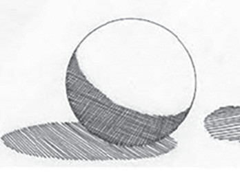
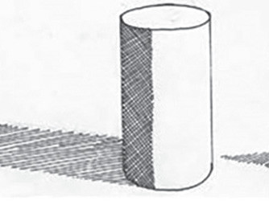
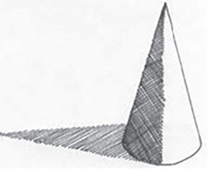

Shadows
Shadows in a picture indicate the direction from which light is coming. Shadows are used to separate one shape from another in the image. Figure 20 shows pictures with shadows that depict the direction of the light source.



Balance
Balance is the state in which the weight of an object is evenly distributed on all sides to ensure stability. This weight can be physical, felt when carrying something, or visual, perceived by looking at objects. In drawing, balance refers to the visual weight perceived through sight. An image needs to have a balance; otherwise, it may make the viewer feel a sense of imbalance and instability. For example, Figure 21 shows an unbalanced image where the artist places many objects (a tree, a rock, and a hill) on the left side, making the image appear tilted toward that side.